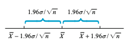
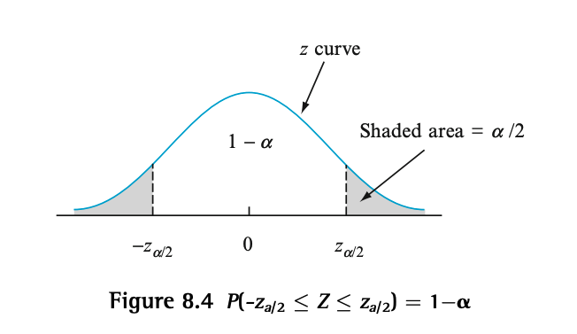

By the end of this section, you will be able to
Industrial engineers who specialize in ergonomics are concerned with designing workspace and devices operated by workers so as to achieve high productivity and comfort. An article reports on a study of preferred height for an experimental keyboard with large forearm-wrist support. A sample of \(n=31\) trained typists were selected, and the preferred keyboard height was determined for each typist. The resulting sample average preferred height was \(\bar{x} = 80\) cm. Assuming that the preferred height is normally distributed with \(\sigma = 2.0\) cm, obtain a CI for \(\mu\), the true average preferred height for the population of all experienced typists.
The actual sample observations \(x_{1}\), \(x_{2}\), …, \(x_{n}\) are assumed to be the result of a random sample \(X_{1}\), \(X_{2}\),…,\(X_{n}\) from a normal distribution with mean \(\mu\) and standard deviation \(\sigma\). The resuts from Chapter 6 then imply that irrespective of the sample size \(n\), the sample mean \(\bar{X}\) is normally distributed with expected value \(\mu\) and standard deviation \(\sigma/\sqrt{n}\). Standardizing \(\bar{X}\) by first subtracting its expected value and then dividing by its standard deviation yields the variable:
\[ Z = \frac{\bar{X} - \mu}{\sigma/\sqrt{n}} \] which has a standard normal distribution. Because the area under the standard normal curve between -1.96 and 1.96 is 0.95,
\[ P\left(-1.96 < \frac{\bar{X} - \mu}{\sigma/\sqrt{n}} < 1.96\right) = 0.95 \]
Next, we need to manipulate what is inside the brackets so that we get something in the form \(l < \mu < u\). Let’s do this step by step:
\[ -1.96 \cdot \frac{\sigma}{\sqrt{n}} < \bar{X} - \mu < 1.96 \cdot \frac{\sigma}{\sqrt{n}} \]
\[ -\bar{X} -1.96 \cdot \frac{\sigma}{\sqrt{n}} < - \mu < -\bar{X} + 1.96 \cdot \frac{\sigma}{\sqrt{n}} \]
\[ \bar{X} + 1.96 \cdot \frac{\sigma}{\sqrt{n}} > \mu > \bar{X} - 1.96 \cdot \frac{\sigma}{\sqrt{n}} \]
That is:
\[ \bar{X} - 1.96 \cdot \frac{\sigma}{\sqrt{n}} < \mu < \bar{X} + 1.96 \cdot \frac{\sigma}{\sqrt{n}} \]
Definition
If after observing $X_{1} = x_{1}$, $X_{2} = x_{2}$, ..., $X_{n} = x_{n}$, we compute the observed sample mean $\bar{x}$ and then substitute $\bar{x}$ into the interval described earlier in place of $\bar{X}$, the resulting fixed interval is called a \textbf{95\% confidence interval for} $\boldsymbol\mu$. This CI can be expressed either as
\[ \left(\bar{x} - 1.96 \cdot \sigma/\sqrt{n}, \bar{x} + 1.96 \cdot \sigma/\sqrt{n} \right) \text{ is a 95\\% confidence interval for } \mu \]
or as
\[ \bar{x} - 1.96 \cdot \sigma/\sqrt{n} < \mu < \bar{x} + 1.96 \cdot \sigma/\sqrt{n} \text{ with 95% confidence} \]
Since all the statements earlier were equivalent, we get that:
\[ P\left(\bar{X} - 1.96 \cdot \frac{\sigma}{\sqrt{n}} < \mu < \bar{X} + 1.96 \cdot \frac{\sigma}{\sqrt{n}}\right) = 0.95 \]
To interpret this, think of a random interval having left endpoint \(\bar{X} - 1.96 \cdot \sigma/\sqrt{n}\) and right endpoint \(\bar{X} + 1.96 \cdot \sigma/\sqrt{n}\), which in interval notation is:
\[ \left(\bar{X} - 1.96 \cdot \sigma/\sqrt{n}, \bar{X} + 1.96 \cdot \sigma/\sqrt{n} \right) \]
The interval is random because the two endpoints of the interval involve a random variable (\(\bar{X}\)). Therefore, the above probability statement can be interpreted as ``the probability is 0.95 that the random interval includes or covers the true value of \(\mu\).”
Below is a visual of the random interval described.
The confidence interval defined was inherited from the probability for the random interval. How can this 95% confidence interval be interpreted?
We started with the probability that the random interval would capture the true value of \(\mu\) being 0.95, but then we used data to compute a fixed interval. Be careful, it is tempting to conclude that \(\mu\) is within this fixed interval with probability 0.95, but by substituting \(\bar{x}\) for \(\bar{X}\), all randomness disappears. Therefore, our calculated interval is not random, and it is thus incorrect to say the probability \(\mu\) lies in the interval is 0.95.
A correct interpretation of “95% confidence” relies on the long-run relative frequency interpretation of probability: To say that an event A has probability 0.95 is to say that if the experiment on which A is defined is performed over and over again, in the long run A will occur 95% of the time.
Let A be the event that \(\bar{X} - 1.96\cdot \sigma/\sqrt{n} < \mu < \bar{X} + 1.96\cdot \sigma/\sqrt{n}\) . Since P(A) = 0.95, in the long run 95% of our computed CIs will contain \(\mu\). This is illustrated below where the vertical line cuts the measurement axis at the true (but unknown) value of \(\mu\). Notice that of the 11 intervals pictured, only intervals 3 and 11 fail to contain \(\mu\). In the long run, only 5% of the intervals so constructed would fail to contain \(\mu\).
A CI is desired for the true average stray-load loss \(\mu\) (watts) for a certain type of induction motor when the line current is held at 10 amps for a speed of 1,500 rpm. Assume that stray-load loss is normally distributed with \(\sigma = 3.0\).
\[ \begin{aligned} \bar{x} - 1.96\cdot \sigma/\sqrt{n} < &\mu < \bar{x} + 1.96\cdot \sigma/\sqrt{n} \\ 58.3 - 1.96\cdot 3.0/\sqrt{25} < &\mu < 58.3 1.96\cdot 3.0/\sqrt{25} \\ 57.124 < \mu < 59.476 \end{aligned} \]
Therefore, we are 95% confident that the true mean stray load loss is between 57.124 and 59.476 watts.
The confidence level of 95% was inherited from the probability 0.95 for the initial inequalities. If a confidence level of 99% was desired instead,the initial probability of 0.95 must be replaced by 0.99, which necessitates changing the \(z\) critical value from 1.96 to 2.58. A 99% CI then results from using 2.58 in place of 1.96 in the formula for the 95% CI.
We can do this for any desired level of confidence. That is, replace 1.96 or 2.58 with the appropriate standard normal critical value. As the figure below shows, a probability of \(1-\alpha\) is achieved by using \(z_{\alpha/2}\) in place of 1.96.
Definition
A 100(1-\(\alpha\))% confidence interval for the mean \(\mu\) of a normal population when the value of \(\sigma\) is known is given by
\[ \left(\bar{x} - z_{\alpha/2}\cdot\frac{\sigma}{\sqrt{n}}, \bar{x} + z_{\alpha/2}\cdot\frac{\sigma}{\sqrt{n}}\right) \]
or equivalently, by \(\bar{x} \pm z_{\alpha/2}\cdot\frac{\sigma}{\sqrt{n}}\).
A CI is desired for the true average stray-load loss \(\mu\) (watts) for a certain type of induction motor when the line current is held at 10 amps for a speed of 1,500 rpm. Assume that stray-load loss is normally distributed with \(\sigma = 3.0\).
\[ \begin{aligned} (\bar{x} - z_{\alpha/2} \cdot \frac{\sigma}{\sqrt{n}} &, \bar{x} + z_{\alpha/2} \cdot \frac{\sigma}{\sqrt{n}}) \\ (58.3 - z_{0.005} \cdot \frac{3.0}{\sqrt{100}} &, 58.3 + z_{0.005} \cdot \frac{3.0}{\sqrt{100}}) \\ (58.3 - 2.58 \cdot \frac{3.0}{\sqrt{100}} &, 58.3 + 2.58 \cdot \frac{3.0}{\sqrt{100}} ) \\ (57.526 &, 59.074) \\ \end{aligned} \]
Why settle for a 95% confidence level when 99% is achievable?
An appealing strategy is to specify both the desired confidence level and interval width and then determine the necessary sample size.
Since the width of an interval is \(w = 2\cdot z_{\alpha/2}\cdot \sigma/\sqrt{n}\), we can rearrange to solve for \(n\), the sample size.
Formula
\[ n \geq \left(2z_{\alpha/2}\cdot \frac{\sigma}{w} \right)^{2} \]
A CI is desired for the true average stray-load loss \(\mu\) (watts) for a certain type of induction motor when the line current is held at 10 amps for a speed of 1,500 rpm. Assume that stray-load loss is normally distributed with \(\sigma = 3.0\).
\[ \begin{aligned} n &\geq \left(2z_{\alpha/2}\cdot \frac{\sigma}{w} \right)^{2} \\ &= \left(2\cdot 2.58\cdot \frac{3.0}{1.0} \right)^{2} \\ &= 239.63 \\ \end{aligned} \]
Therefore a sample size of 240 is needed to obtain a width of 1.0 at 99% confidence.
Assume that the helium porosity (in percentage) of coal samples taken from any particular seam is normally distributed with true standard deviation 0.75.
Let \(X_{1}\), \(X_{2}\),…,\(X_{n}\) denote the sample on which the CI for a parameter \(\theta\) is to be based. Suppose a random variable satisfying the following two properties can be found.
Let \(h(X_{1}, X_{2}, ... , X_{n}; y)\) denote this random variable. For example, if the population distribution is normal with known \(\sigma\) and \(\theta = \mu\), the variable \(h(X_{1}; ... ; X_{n}; \theta) = (X - \mu)/(\sigma/\sqrt{n})\) satisfies both properties; it clearly depends functionally on \(\mu\), yet has the standard normal probability distribution, which does not depend on \(\mu\). In general, the form of the \(h\) function is usually suggested by examining the distribution of an appropriate estimator \(\hat{\theta}\).
For any \(\alpha\) between \(0\) and \(1\), constants \(a\) and \(b\) can be found to satisfy
\[ P[a < h(X_{1}; ... ; X_{n}; \theta) < b] = 1 - \alpha \]
Because of the second property, \(a\) and \(b\) do not depend on \(\theta\). In the normal example \(a = -z_{\alpha/2}\) and \(b = z_{\alpha/2}\). Now suppose that the inequalities above can be manipulated to isolate \(\theta\), giving the equivalent probability statement
\[ P[l(X_{1},...,X_{n}) < \theta < u(X_{1},...,x_{n})] = 1 - \alpha \]
Then \(l(x_{1}, x_{2}, ... , x_{n})\) and \(u(x_{1}, ... , x_{n})\) are the lower and upper confidence limits, respectively, for a \(100(1 - \alpha)\%\) CI. In the normal example, we saw that \(l(X_{1}, ..., X_{n}) = \bar{X} - z_{\alpha/2} \cdot \sigma/ \sqrt{n}\) and \(u(X_{1}, ..., X_{n}) = \bar{X} + z_{\alpha/2} \cdot \sigma/ \sqrt{n}\).
\[ \bar{x} \pm z_{\alpha/2}\cdot \frac{\sigma}{\sqrt{n}} \]
\[ n \geq \left( 2\cdot z_{\alpha/2}\cdot \frac{\sigma}{w}\right)^{2} \]
The CI for \(\mu\) presented in the previous section assumed that the population distribution is normal and that the value of \(\sigma\) is known. We now present a large-sample CI whose validity does not require these assumptions.
Let \(X_{1}\), \(X_{2}\),…, \(X_{n}\) be a random sample from a population having a mean \(\mu\) and standard deviation \(\sigma\). Provided that \(n\) is large, the Central Limit Theorem (CLT) implies that \(\bar{X}\) has approximately a normal distribution whatever the nature of the population distribution. It then follows that \(Z = \frac{\bar{X}-\mu}{\sigma/\sqrt{n}}\) has approximately a standard normal distribution, so that:
\[ P\left(-z_{\alpha/2} < \frac{\bar{X} - \mu}{\sigma/\sqrt{n}} < z_{\alpha/2}\right) \approx 1 - \alpha \]
But this still requires \(\sigma\), which will almost never be known. Consider the standardized variable
\[ Z = \frac{\bar{X} - \mu}{S/\sqrt{n}} \]
where \(\sigma\), is replaced by the sample standard deviation \(S\). Previously there was randomness only in the number of \(Z\), but now there is randomness in the numerator and the denominator - the values of both \(\bar{X}\) and \(S\) vary from sample to sample. However, when \(n\) is large, the use of \(S\) rather than \(\sigma\) adds very little extra variability to \(Z\). More specifically, in this case the new \(Z\) also has approximately a standard normal distribution.
Proposition
If \(n\) is sufficiently large, the standardized variable
\[ Z = \frac{\bar{X} - \mu}{S/\sqrt{n}} \]
has approximately a standard normal distribution. This implies that
\[ \bar{x} \pm z_{\alpha/2}\cdot \frac{s}{\sqrt{n}} \]
is a large-sample confidence interval for \(\mu\) with confidence level approximately 100(\(1-\alpha\))%. This formula is valid regardless of the shape of the population distribution.
Speaking generally, \(n>40\) will be sufficient to justify the use of this interval. This is somewhat more conservative than the rule of thumb for the CLT because of the additional variability introduced by using \(S\) in place of \(\sigma\).
A random sample of 110 lightning flashes in a region resulted in a sample average radar echo duration of 0.81s and a sample standard deviation of 0.34 s. Calculate a 99% confidence interval for the true average echo duration \(\mu\) and interpret the resulting interval.
\(n = 110\)
\(\bar{x} = 0.81\)
\(s = 0.34\)
\(\alpha = 0.01\)
\[ \begin{aligned} \bar{x} &\pm z_{\alpha/2}\cdot \frac{s}{\sqrt{n}} \\ 0.81 &\pm z_{0.005}\cdot \frac{0.34}{\sqrt{110}} \\ 0.81 &\pm 2.575 \cdot \frac{0.34}{\sqrt{110}} \\ 0.81 &\pm 0.083 \\ (0.727&, 0.893) \end{aligned} \]
We are 99% confident that the true average radar echo duration of lightning flashes in a region is between 0.727 and 0.893 MPa.
An article gave the following summary information for fracture strengths (MPa) of \(n = 169\) ceramic bars fired in a particular kiln: \(\bar{x} = 89.10, s = 3.73\).
Suppose that \(\hat{\theta}\) is an estimator satisfying the following properties:
For example, in the case of \(\theta = \mu\), \(\hat{\mu} = \bar{X}\) is an unbiased estimator whose distribution is approximately normal when \(n\) is large and \(\sigma_{\hat{\mu}} = \sigma_{\bar{X}} = \sigma/\sqrt{n}\). Standardizing \(\hat{\theta}\) yields the rv \(Z = (\hat{\theta} - \theta)/\sigma_{\hat{\theta}}\), which has approximately a standard normal distribution. This justifies the probability statement
\[ P\left(-z_{\alpha/2} < \frac{\hat{\theta} - \theta}{\sigma_{\hat{\theta}}} < z_{\alpha/2}\right) \approx 1 - \alpha \]
Finally, suppose that \(\sigma_{\hat{\theta}}\) does involve the unknown \(\sigma\). This is the case, for example, when \(\theta=p\), a population proportion. Then \((\hat{\theta} - \theta)/\sigma_{\hat{\theta}} = z_{\alpha/2}\) can be difficult to solve. An approximate solution can often be obtained by replacing \(\theta\) in \(\sigma_{\hat{\theta}}\) by its estimate \(\hat{\theta}\). This results in an estimated standard deviation \(s_{\hat{\theta}}\), and the corresponding interval is again \(\hat{\theta} \pm z_{\alpha/2}\cdot s_{\hat{\theta}}\)
The superintendent of a large school district, having once had a course in probability and statistics, believes that the number of teachers absent on any given day has a Poisson distribution with parameter \(\lambda\). Use the accompanying data on absences for 50 days to derive a large-sample CI for \(\lambda\). [Hint: The mean and variance of a Poisson variable both equal \(\lambda\)], so
\[ Z = \frac{\bar{X} - \lambda}{\sqrt{\lambda/n}} \]
has approximately a standard normal distribution. Make a probability statement (with probability 1 - \(\alpha\)) and solve the resulting inequalities for \(\lambda\).
| Number of absences | 0 | 1 | 2 | 3 | 4 | 5 | 6 | 7 | 8 | 9 | 10 |
|---|---|---|---|---|---|---|---|---|---|---|---|
| Frequency | 1 | 4 | 8 | 10 | 8 | 7 | 5 | 3 | 2 | 1 | 1 |
\[ P(-z_{\alpha/2} < \frac{\bar{X} - \lambda}{\sqrt{\lambda/n}} < z_{\alpha/2} ) \approx 1 - \alpha \]
Now we need to rearrange the inequality in the probability statement to solve for \(\lambda\). Let’s consider it as an equality statement first for simplicity.
\[ \begin{aligned} \frac{\bar{X} - \lambda}{\sqrt{\lambda/n}} &= \pm z_{\alpha/2}\\ \bar{X} - \lambda &= \pm z_{\alpha/2}\sqrt{\lambda/n} \\ (\bar{X} - \lambda)^{2} &= (\pm z_{\alpha/2}\sqrt{\lambda/n})^{2} \\ \bar{X}^{2} -2\bar{X}\lambda + \lambda^{2} &= z_{\alpha/2}^{2}\lambda/n \\ \bar{X}^{2} -(2\bar{X} + z^{2}_{\alpha/2}/n)\lambda + \lambda^{2} &= 0 \end{aligned} \]
From the quadratic equation, letting \(a = 1\), \(b = -(2\bar{X} + z^{2}_{\alpha/2}/n)\) and \(c = \bar{X}^{2}\).
\[ \begin{aligned} \frac{-b \pm \sqrt{b^{2} - 4ac}}{2a} \\ \frac{-(-(2\bar{X} + z^{2}_{\alpha/2}/n)) \pm \sqrt{[-(2\bar{X} + z^{2}_{\alpha/2}/n)]^{2} - 4\bar{X}^{2}}}{2} \\ \bar{X} + \frac{z^{2}_{\alpha/2}}{2n} \pm \frac{\sqrt{4\bar{X}^{2} + 4\bar{X}z_{\alpha/2}^{2}/n + z_{\alpha/2}^{4}/n^{2} - 4\bar{X}^{2}}}{2} \\ \bar{X} + \frac{z^{2}_{\alpha/2}}{2n} \pm \frac{\sqrt{4\bar{X}z_{\alpha/2}^{2}/n + z_{\alpha/2}^{4}/n^{2}}}{2} \\ \bar{X} + \frac{z^{2}_{\alpha/2}}{2n} \pm z_{\alpha/2}\frac{\sqrt{4n\bar{X} + z_{\alpha/2}^{2}}}{2n} \end{aligned} \]
Therefore, we can plug into the final statement to obtain our confidence bounds for \(\lambda\).
From the data, we get that \(\bar{X} = 203/50 = 4.06\), \(n=50\) and for 95% confidence, \(z_{0.025} = 1.96\).
\[ \begin{aligned} \bar{X} + \frac{z^{2}_{\alpha/2}}{2n} &\pm z_{\alpha/2}\frac{\sqrt{4n\bar{X} + z_{\alpha/2}^{2}}}{2n} \\ 4.06 + \frac{1.96^{2}}{2(50)} &\pm 1.96\frac{\sqrt{4(50)(4.06) + 1.96^{2}}}{2(50)} \\ 4.0984 &\pm 1.96\frac{\sqrt{815.8416}}{100} \\ 4.0984 &\pm 0.5598\\ (3.5386&, 4.6582) \end{aligned} \]
Note that for large \(n\), this is approximately equivalent to \(\bar{X} \pm z_{\alpha/2}\frac{\sqrt{\bar{X}}}{\sqrt{n}} = \hat{\mu} \pm z_{\alpha/2}\frac{\hat{\sigma}}{\sqrt{n}}\) (since \(\mu= \sigma^{2} = \lambda\) for the Poisson distribution).
\[ P(-z_{\alpha/2} < \frac{\hat{p} - p}{\sqrt{p(1-p)/n}} < z_{\alpha/2}) \approx 1-\alpha \]
Show derivation on board
Proposition
Let \(\tilde{p} = \frac{\hat{p} + z_{\alpha/2}^{2}/2n}{1 + z^{2}_{\alpha/2}/n}\). Then a confidence interval for a population proportion p with confidence level approximately 100(1-\(\alpha\))% is
\[ \tilde{p} \pm z_{\alpha/2}\frac{\sqrt{\hat{p}\hat{q}/n + z_{\alpha/2}^{2}/4n^{2}}}{1+z^{2}_{\alpha/2}/n} \]
where \(\hat{q} = 1 - \hat{p}\). This is often referred to the “score CI” for \(p\).
The Associated Press (October 9, 2002) reported that in a survey of 4722 American youngsters aged 6-19, 15% were seriously overweight (a body mass index of at least 30; this index is a measure of weight relative to height). Calculate and interpret a confidence interval using a 99% confidence level for the proportion of all American youngsters who are seriously overweight.
\(\hat{p} = 0.15\)
\(n = 4722\)
\(z_{\alpha/2} = z_{0.005} = 2.575\).
\[ \begin{aligned} \tilde{p} &= \frac{\hat{p} + z_{\alpha/2}^{2}/2n}{1 + z^{2}_{\alpha/2}/n} \\ &= \frac{0.15 + 2.575^{2}/2(4722)}{1 + 2.575^{2}/4722} \\ &= 0.1505 \end{aligned} \]
\[ \begin{aligned} \tilde{p} &\pm z_{\alpha/2}\frac{\sqrt{\hat{p}\hat{q}/n + z_{\alpha/2}^{2}/4n^{2}}}{1+z^{2}_{\alpha/2}/n} \\ 0.1505 &\pm 2.575\frac{\sqrt{0.15(0.85)/4722 + 2.575^{2}/4(4722)^{2}}}{1+2.575^{2}/4722} \\ 0.1505 &\pm 0.0134 \\ (0.1371&, 0.1639) \end{aligned} \]
An insurance company checks police records on 582 accidents selected at random and notes that teenagers were at the wheel in 91 of them.
If the sample size \(n\) is very large, then \(z_{\alpha/2}^{2}/2n\) is generally quite small compared to \(\hat{p}\), and \(z_{\alpha/2}^{2}/n\) is quite small compared to 1. Therefore, \(\tilde{p} \approx \hat{p}\).
Similarly, \(z_{\alpha/2}^{2}/4n^{2}\) is small compared to \(\hat{p}\hat{q}/n\) and so the dominant term in the \(\pm\) expression is \(z_{\alpha/2}\sqrt{\hat{p}\hat{q}/n}\) and the score interval is approximately
\[ \hat{p} \pm z_{\alpha/2}\sqrt{\hat{p}\hat{q}/n} \]
\[ n\hat{p} \geq 10 \& n(1-\hat{p}) \geq 10 \]
First, let’s introduce two terms:
The actual coverage probability can differ greatly from the nominal probability, particularly when \(p\) is not close to 0.5.
With the traditional interval, the nominal probability (0.95 in the graph) can differ greatly from the actual coverage probability, even for reasonably large sample sizes. The score interval rectifies this behaviour. That is, it’s actual coverage probability will be quite close to the nominal level specified by \(z_{\alpha/2}\).
Additionally, the score interval can be used with nearly all sample sizes and parameter values. Therefore, we do not have to check that \(n\hat{p} \geq 10\) and \(n(1-\hat{p}) \geq 10\), which is required when the traditional interval is used.
Use the traditional interval.
The Associated Press (October 9, 2002) reported that in a survey of 4722 American youngsters aged 6-19, 15% were seriously overweight (a body mass index of at least 30; this index is a measure of weight relative to height). Calculate and interpret a confidence interval using a 99% confidence level for the proportion of all American youngsters who are seriously overweight.
\(\hat{p} = 0.15\)
\(n = 4722\)
\(z_{\alpha/2} = z_{0.005} = 2.575\).
First, check!
\[ \begin{aligned} n\hat{p} &= 4722(0.15) \\ &= 708.3 \geq 10 \end{aligned} \]
\[ \begin{aligned} n(1-\hat{p}) &= 4722(1-0.15) \\ &= 4013.7 \geq 10 \end{aligned} \]
\[ \begin{aligned} \hat{p} &\pm z_{\alpha/2}\sqrt{\hat{p}\hat{q}/n} \\ 0.15 &\pm 2.575\sqrt{(0.15)(0.85)/4722}\\ 0.15 &\pm 0.0134 \\ (0.1355&, 0.1634) \end{aligned} \]
Therefore, we are 99% confidence that the proportion of all American youngsters who are seriously overweight is between 0.1355 and 0.1634.
An insurance company checks police records on 582 accidents selected at random and notes that teenagers were at the wheel in 91 of them.
Use 95% confidence and the traditional interval and compare to the score interval found earlier.
\[ P\left( \frac{\bar{X} - \mu}{S/\sqrt{n}} < z_{\alpha}\right) 1 - \alpha \]
Manipulating the inequality, we get the results on the following slide.
Proposition
A large-sample upper confidence bound for \(\boldsymbol\mu\) is
\[ \mu < \bar{x} + z_{\alpha} \frac{s}{\sqrt{n}} \]
and a large-sample lower confidence bound for \(\boldsymbol\mu\) is
\[ \mu > \bar{x} - z_{\alpha} \frac{s}{\sqrt{n}} \]
A one-sided confidence bound for p results from replacing \(z_{\alpha/2}\) by \(z_{\alpha}\) and \(\pm\) by either \(+\) or \(-\) in the CI formula for \(p\). In all cases, the confidence level is approximately \(100(1-\alpha)\)%.
A sample of 66 obese adults as put on a low-carbohydrate diet for a year. The average weight loss was 11 lb and the standard deviation was 19 lb. Calculate a 99% lower confidence bound for the true average weight loss. What does this bound say about confidence that that the mean weight loss is positive?
\(n = 66\)
\(\bar{x} = 11\)
\(s = 19\)
\(z_{0.01} = 2.33\)
\[ \begin{aligned} \mu &> \bar{x} - z_{\alpha}\frac{s}{\sqrt{n}} \\ &> 11 - 2.33 \frac{19}{\sqrt{66}} \\ &> 5.55 \end{aligned} \]
Therefore, we are 99% confident that the true average weight loss of all adults put on a low-carbohydrate diet for a year is larger than 5.55 lbs. So, we are very certain that \(\mu\) is positive.
In a sample of 1000 randomly selected consumers who had opportunities to send in a rebate claim form after purchasing a product, 250 of these people said they never did so. Reasons cited for their behaviour included too many steps in the process, amount too small, missed deadline, fear of being placed on a mailing list, lost receipt, and doubts about receiving the money. Calculate an upper confidence bound at the 95% level for the true proportion of such consumers who never apply for a rebate. Based on this bound, is there compelling evidence that the true proportion of such consumers is smaller than 1/3?. Explain your reasoning.